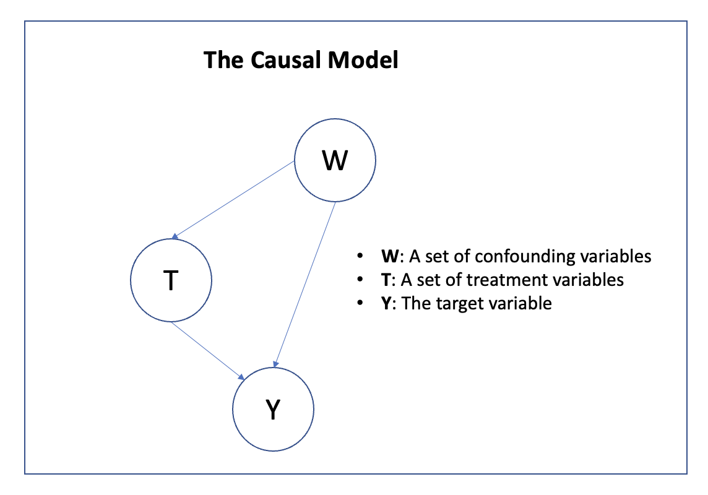

TMLE
The purpose of this package is to provide convenience methods for Targeted Minimum Loss-Based Estimation (TMLE). TMLE is a framework for efficient estimation that was first proposed by Van der Laan et al in 2006. If you want to go beyond misspecified models like linear regressions models that provide no theoretical guarantees you are in the right place. If you are new to TMLE, this review paper gives a nice overview to the field. Because TMLE requires nuisance parameters to be learnt by machine learning algorithms, this package is built on top of MLJ. This means that any model respecting the MLJ interface can be used to estimate the nuisance parameters.
This package is still experimental and documentation under construction
Installation
julia> add TMLEGet in touch
Please feel free to fill an issue if you want to report any bug or want to have additional features part of the package. Contributing is also welcome.
Introduction and Scope of the package
Efficient estimation is particularly well suited for the estimation of causal effects and thus most of the TMLE literature has focused on parameters that have a causal interpretation under suitable assumptions. In what follows, the following common causal graph is assumed:
This graph encodes a factorization of the joint probability distribution:
\[P(T, W, Y) = P(Y|T, W)P(T|W)P(W)\]
Currently, two parameters of the generating distribution are available for estimation.
The ATE
The Average Treatment Effect (ATE) is the average additive effect of a treatment among a population. It can be analytically computed as:
\[ATE = E_W[E[Y|T=1, W]] - E_W[E[Y|T=0, W]]\]
The IATE
The Interaction Average Treatment Effect (IATE) is the counterpart to the ATE when there are potentially multiple interacting treatments. It was generally defined by Beentjes and Khamseh in this paper and the formula for 2 treatments can be reduced to:
\[IATE = E_W[E[Y|T_1=1, T_2=1, W]] - E_W[E[Y|T_1=1, T_2=0, W]] - E_W[E[Y|T_1=0, T_2=1, W]] + E_W[E[Y|T_1=0, T_2=0, W]] \]
TMLE
As you can see, those two formula are very similar and can be leveraged for estimation. We can see that two intermediate quantities that will be required are: the conditional expectation of the target given the treatment and the confounders$Q(t, w) = E[Y|T=t, W=w]$ and the density of the confounders $G(t, w) = p(T=t|W=w)$. TMLE is a two steps procedure, it first starts by estimating those two quantities that are termed nuisance parameters. They are called nuisance parameters because they are required for estimation but are not our target quantity of interest.
At this point, any function estimator (machine learning method) can be used for each of the nuisance parameter. However, because we want to endow our estimation strategy with guarantees it has been shown that it is optimal to use stacking which is a ensemble method based on cross validation. Stacking is built into MLJ and you can find more information about it here. Stacking is not compulsory, and any model respecting the MLJ Interface should work out of the box.
In the second stage, TMLE fluctuates a nuisance parameter using a parametric sub-model in order to solve the efficient influence curve equation. A first benefit of this approach is that it is doubly robust, this means that only one nuisance parameter need to be consistently estimated for the full procedure to be consistent itself. Another advantage is that the estimator is asymptotically normal which means we can easily compute confidence intervals and p-values.
Quick Start
Let's assume we have a dataset (T, W, y) where T is a set of 2 treatment variables confounded by W and for which we want to estimate the interaction effect on y. As discussed above we need to specify two learning algorithms for the suisance parameters:
- Q: A learning algorithm for $Q(t, w)$. For simplicity, a linear regression because Y is continuous but stacking is preferred.
- G: A learning algorithm for $G(t, w)$, here a logistic regression, again stacing is preferred. Note that T is a random vector, we thus need to estimate the joint density over $T=(T_1,T_2)$. For this purpose, a wrapper
FullCategoricalJointis provided. It will encode all combinations of $T_1, T_2$ into a single variable and use the underlying model to estimate the density.
Finally, we are asking a specific question. Let's be a bit more specific and say the interaction effect of both:
- replacing one G for a C in a homozygous person G at locus $L_1$
- replacing another T for a A in a heterozygous person TA at locus $L_2$
This is embodied by a query for which the Query type is provided.
We are now ready to run the estimation as described in the following example (Requires add MLJLinearModels):
using TMLE
using MLJ
# Loading models
LogisticClassifier = @load LogisticClassifier pkg=MLJLinearModels verbosity=0
LinearRegressor = @load LinearRegressor pkg=MLJLinearModels verbosity = 0
# Generating fake data
n = 1000
T = (
t₁=categorical(rand(["CG", "GG", "CC"], n)),
t₂=categorical(rand(["TT", "TA", "AA"], n))
)
W = MLJ.table(rand(n, 3))
y = rand(n)
# Defining the TMLE
query = Query(case=(t₁="CG", t₂="TT"), control=(t₁="GG", t₂="TA"), name="MyQuery")
Q = LinearRegressor()
G = FullCategoricalJoint(LogisticClassifier())
tmle = TMLEstimator(Q, G, query)
# Fitting
mach = machine(tmle, T, W, y)
fit!(mach)
# Report
briefreport(mach)The content of the brief report is a Tuple that for each target/query pair reprots a NamedTuple containing the following fields:
- target_name: If only one target is provided (y is a vector) it is denoted by
yotherwise it corresponds to the columnname in the table Y. - query: The associated query
- pvalue: The p-value
- confint: A 95% confidence interval around the estimated quantity
- estimate: An estimate of the quantity of interest
- initial_estimated: The initial estimate that we would have reached without applying the tmle step
- stderror: The estimate of the standard error
- meaninfcurve: The empirical mean of the influence curve
Side Notes:
- The effect treatment value appears in the first position in the query (for instance CG is first compared to GG which is the reference).
- As per all MLJ inputs, T and W should respect the Tables.jl interface
- Y can also be either a vetor or a Tables.jl respecting interface. This can be useful to limit computational complexity since $p(T|W)$ needs to be only fitted once for all targets.
Tutorials
For those examples, we will need the following packages:
using Random
using Distributions
using MLJ
using TMLE
expit(X) = 1 ./ (1 .+ exp.(-X))ATE
Let's consider the following example for the ATE parameter:
- W = [W1, W2, W_3] is a set of binary confounding variables, $W \sim Bernoulli(0.5)$
- T is a Binary variable, $p(T=1|W=w) = \text{expit}(0.5W_1 + 1.5W_2 - W_3)$
- Y is a Continuous variable, $Y = T + 2W_1 + 3W_2 - 4W_3 + \epsilon(0, 1)$
For which the ATE can be computed explicitely and is equal to 1. In Julia such dataset can be generated like this:
n = 10000
rng = MersenneTwister(0)
# Sampling
Unif = Uniform(0, 1)
W = float(rand(rng, Bernoulli(0.5), n, 3))
t = rand(rng, Unif, n) .< expit(0.5W[:, 1] + 1.5W[:, 2] - W[:,3])
y = t + 2W[:, 1] + 3W[:, 2] - 4W[:, 3] + rand(rng, Normal(0, 1), n)
# W and T need to respect the Tables.jl interface.
W = MLJ.table(W)
T = (T=categorical(t),)We need to define 2 estimators for the nuisance parameters, usually this is done using the Stack but here because we know the generating process we can cheat a bit. We will use a Logistic Classifier for p(T|W) and a Constant Regressor for p(Y|W, T). This means one estimator is well specified and the other not.
LogisticClassifier = @load LogisticClassifier pkg=MLJLinearModels verbosity=0
query = Query(case=(T=1,), control=(T=0,))
Q = MLJ.DeterministicConstantRegressor()
G = LogisticClassifier()
tmle = TMLEstimator(Q, G, query)Now, all there is to do is to fit the estimator:
mach = machine(tmle, T, W, y)
fit!(mach)Their are various ways in which you can investigate the results:
Regular MLJ entrypoints: fitted_params and report
fitted_params
fitted_params(mach)The fitted_params function is the regular MLJ entrypoint to retrieve all fitted parameters for all submachines in our TMLEstimator machine, it gives access to a NamedTuple that contains all results from the fit, including:
A fitresult for Q
A fitresult for G
A fitresult for the fluctuation denoted F
report
report(mach)The full report of the fittedmachine, including an entry for each query denoted by fields `target$i_query_$jwherei,jindex the targets and queries respectively. Each of this entry is aReport` entity that contains all the necessary information you might need to extract for this specific query.
TMLE.jl Specific entrypoints
queryreport(mach, target_idx, query_idx)
qr = queryreport(mach, 1, 1)This will give you an easy access to the Report structure.
ztest(mach, target_idx, query_idx)
It can be called either on the machine by providing a sequence of indices (see the multiple-queries section for an exemple for more than 1 query) or on the query report itself.
ztest(mach, 1, 1) == ztest(qr)
ztest(qr)It is a simple wrapper over the OneSampleZTest from the HypothesisTests.jl package and will provide a confidence interval, a p-value, etc....
briefreport
briefreport(mach)Finally, the briefreport function provides an easy way to access most relevant information in usual cases.
Conslusion
We can see that even if one nuisance parameter is misspecified, the double robustness of TMLE enables correct estimation of our target.
IATE
In this case, the treatment variable T is a vector, for instance for two treatments T=(T1, T2) but it can accomodate for any dimensionality of T.
Let's consider the following example for which again the IATE is known:
- W is a binary outcome confounding variable, $W \sim Bernoulli(0.4)$
- $T =(T_1, T_2)$ are independent binary variables sampled from an expit model. $p(T_1=1|W=w) = \text{expit}(0.5w - 1)$ and, $p(T_2=1|W=w) = \text{expit}(-0.5w - 1)$
- Y is a binary variable sampled from an expit model. $p(Y=1|t_1, t_2, w) = \text{expit}(-2w + 3t_1 - 3t_2 - 1)$
In Julia:
n = 10000
rng = MersenneTwister(0)
p_w() = 0.4
pt1_given_w(w) = expit(0.5w .- 1)
pt2_given_w(w) = expit(-0.5w .- 1)
py_given_t1t2w(t1, t2, w) = expit(-2w .+ 3t1 .- 3t2 .- 1)
# Sampling
Unif = Uniform(0, 1)
w = rand(rng, Unif, n) .< p_w()
t₁ = rand(rng, Unif, n) .< pt1_given_w(w)
t₂ = rand(rng, Unif, n) .< pt2_given_w(w)
y = rand(rng, Unif, n) .< py_given_t1t2w(t₁, t₂, w)
# W should be a table
# T should be a table of binary categorical variables
# Y should be a binary categorical variable
W = (W=convert(Array{Float64}, w),)
T = (t₁ = categorical(t₁), t₂ = categorical(t₂))
y = categorical(y)
# Compute the theoretical IATE
IATE₁ = (py_given_t1t2w(1, 1, 1) - py_given_t1t2w(1, 0, 1) - py_given_t1t2w(0, 1, 1) + py_given_t1t2w(0, 0, 1))*p_w()
IATE₀ = (py_given_t1t2w(1, 1, 0) - py_given_t1t2w(1, 0, 0) - py_given_t1t2w(0, 1, 0) + py_given_t1t2w(0, 0, 0))*(1 - p_w())
IATE = IATE₁ + IATE₀Again, we need to estimate the 2 nuisance parameters, this time let's use the Stack with a few learning algorithms. The fluctuation will be a Logistic Regression, this is done by specifying a Bernoulli distribution for the Generalized Linear Model.
LogisticClassifier = @load LogisticClassifier pkg=MLJLinearModels verbosity=0
DecisionTreeClassifier = @load DecisionTreeClassifier pkg=DecisionTree verbosity=0
KNNClassifier = @load KNNClassifier pkg=NearestNeighborModels verbosity=0
stack = Stack(;metalearner=LogisticClassifier(),
resampling=CV(),
lr=LogisticClassifier(),
tree_2=DecisionTreeClassifier(max_depth=2),
tree_3=DecisionTreeClassifier(max_depth=3),
knn=KNNClassifier())
query = Query(case=(t₁=1, t₂=1), control=(t₁=0, t₂=0))
Q̅ = stack
G = FullCategoricalJoint(stack)
tmle = TMLEstimator(Q̅, G, query)And fit it!
mach = machine(tmle, T, W, y)
fit!(mach)
briefreport(mach)Multiple targets/queries
We have seen that we need to estimate nuisance parameters as efficiently as possible and this is usually where the performance bottleneck lies because we are using stacking and many learning algorithms. In some situations listed below, it is useful not to repeat the estimation of nuisance parameters:
- If multiple targets are considered, $p(T|W)$ needs only be fitted once
- If multiple queries are asked, only the fluctuation step needs to be performed
- A combination of both previous scenarios is possible
Let's take the genetic example once again but assume we are interested in 2 targets and 3 queries (many more combinations exist for this dataset)!
using TMLE
using MLJ
# Loading models
LogisticClassifier = @load LogisticClassifier pkg=MLJLinearModels verbosity=0
LinearRegressor = @load LinearRegressor pkg=MLJLinearModels verbosity = 0
# Generating fake data
n = 1000
T = (
t₁=categorical(rand(["CG", "GG", "CC"], n)),
t₂=categorical(rand(["TT", "TA", "AA"], n))
)
W = MLJ.table(rand(n, 3))
Y = (y₁=rand(n), y₂=rand(n))
# Defining the TMLE
queries = [
Query(case=(t₁="CG", t₂="TT"), control=(t₁="GG", t₂="TA"), name="Query1"),
Query(case=(t₁="GG", t₂="TT"), control=(t₁="CG", t₂="TA"), name="Query2"),
Query(case=(t₁="CG", t₂="TT"), control=(t₁="GG", t₂="AA"), name="Query3")
]
Q = LinearRegressor()
G = FullCategoricalJoint(LogisticClassifier())
tmle = TMLEstimator(Q, G, queries...)
# Fitting
mach = machine(tmle, T, W, Y)
fit!(mach)
# Report
briefreport(mach)The report contains a Report for each target/query pair.
One can for instance perform a paired Z-Test to compare if the estimate resulting from two different queries for the first target is significantly different. Here we compare the first and third query:
ztest(mach, 1, 1 => 3)Or perform a simple Z-Test for a simple target/query, here y₂ and the first query:
ztest(mach, 2, 1)which will output a Tuple of three tests.
API
TMLE.FullCategoricalJoint — TypeFullCategoricalJoint(model)A thin wrapper around a classifier to fit a full categorical joint distribution.
TMLE.Query — TypeStructure holding the causal question of interest.
- name: Name identifying the query
- case: The treatment combination that defines the case scenario
- control: The treatment combination that defines the control scenario
TMLE.Query — MethodQuery(case::NamedTuple, control::NamedTuple; name=nothing)TMLE.Query — MethodQuery(;case=NamedTuple{}(), control=NamedTuple{}(), name=nothing)TMLE.TMLEstimator — MethodTMLEstimator(Q̅, G, F, query; threshold=0.005)Implements the Targeted Minimum Loss-Based Estimator introduced by van der Laan in https://pubmed.ncbi.nlm.nih.gov/22611591/. Two functionals of the data generating distribution can currently be estimated:
- The classic Average Treatment Effect (ATE)
- The Interaction Average Treatment Effect (IATE) defined by Beentjes and Khamseh in
https://link.aps.org/doi/10.1103/PhysRevE.102.053314. For instance, The IATE is defined for two treatment variables as:
IATE = E[E[Y|T₁=1, T₂=1, W=w] - E[E[Y|T₁=1, T₂=0, W=w] - E[E[Y|T₁=0, T₂=1, W=w] + E[E[Y|T₁=0, T₂=0, W=w]
where:
- Y is the target variable (Binary)
- T = T₁, T₂ are the treatment variables (Binary)
- W are confounder variables
The TMLEstimator procedure relies on plugin estimation. Like the ATE, the IATE requires an estimator of t,w → E[Y|T=t, W=w], an estimator of w → p(T|w) and an estimator of w → p(w). The empirical distribution will be used for w → p(w) all along. The estimator of t,w → E[Y|T=t, W=w] is then fluctuated to solve the efficient influence curve equation.
Arguments:
- Q̅: A Supervised learner for E[Y|W, T]
- G: A Supervised learner for p(T | W)
- queries...: At least one query
- threshold: p(T | W) is truncated to this value to avoid division overflows.
MLJModelInterface.fit — MethodMLJBase.fit(model::FullCategoricalJoint, verbosity::Int, X, Y)X and Y should respect the Tables.jl interface.
MLJModelInterface.fit — MethodMLJBase.fit(tmle::TMLEstimator,
verbosity::Int,
T,
W,
Y)Estimates the Average Treatment Effect or the Interaction Average Treatment Effect using the TMLE framework.
Arguments:
- T: A table representing treatment variables. If multiple treatments are provided,
the interaction effect (IATE) is estimated.
- W: A table of confounding variables.
- Y: A vector or a table. If Y is a table, p(T|W) is fit only once and E[Y|T,W]
is fit for each column in Y. If the number of target variables in large, it helps
to drastically reduce the computational time.TMLE.briefreport — Methodbriefreport(mach::Machine{TMLEstimator}; tail=:both, alpha=0.05)For a given Machine{<:TMLEstimator}, provides a summary of useful statistics for each query.
# Arguments: - mach: The fitted machine - tail: controls weither the test is single or two sided: eg :left, :right or :both - alpha: level of the test
TMLE.briefreport — Methodbriefreport(r::Report; tail=:both, alpha=0.05)For a given Report, provides a summary of useful statistics.
# Arguments: - r: A query report, for instance extracted via queryreport - tail: controls weither the test is single or two sided: eg :left, :right or :both - alpha: level of the test
TMLE.ztest — Methodztest(mach::Machine{<:TMLEstimator}, target_idx::Int, query_idx::Int)Performs a Z-Test for the given target/query pair. See also: ztest(r::Report)
TMLE.ztest — Methodztest(mach::Machine{<:TMLEstimator})Performs a Z-Test for all target/query pairs fitted by the machine. See also: ztest(r::Report)
TMLE.ztest — Methodztest(r::Report)If the original data is i.i.d, the influence curve is Normally distributed and its variance can be estimated by the sample variance over all samples. We can then perform a Z-Test for a given Report object. It will test weither the measured effect size is significantly different from 0 under those assumptions.